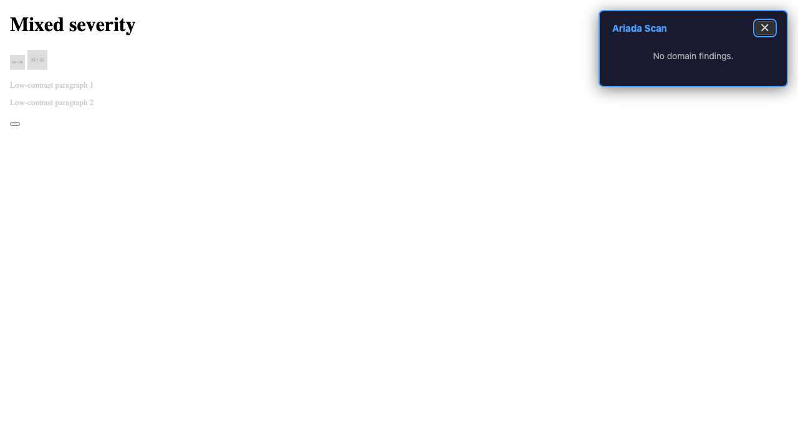
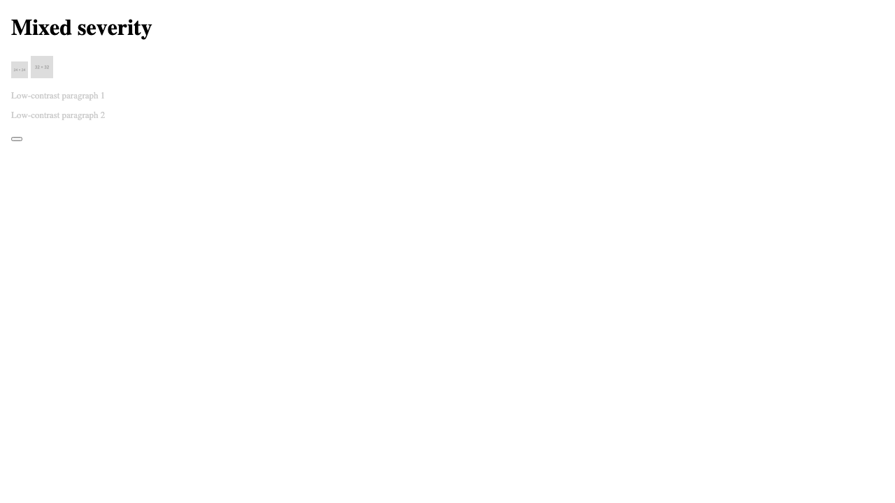
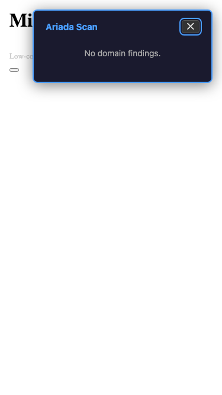
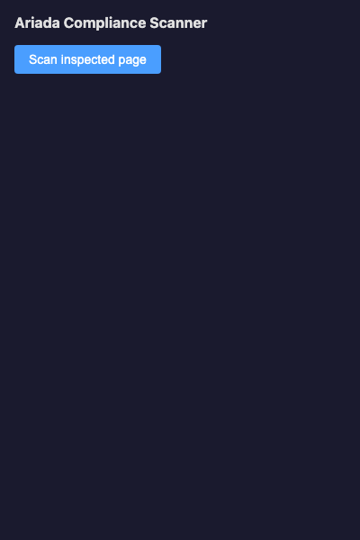

What this module is
The Ariada browser surface is an in-page overlay:
a self-contained shadow-DOM element injected by a bookmarklet (or by the companion
browser extension) that runs @ariada-org/core-browser on the current
document and renders a compact findings badge — no page navigation, no server call,
no account.
packages/core-browser. Every screenshot below is from
the end-to-end Playwright harness, not a design tool.
- Type
- In-page overlay injected via bookmarklet or extension content-script
- Where it lives
packages/core-browser— the WebAssembly-compatible in-browser adapter for the scan engine- What it runs
- The six OSS domain analyzers on the current document's DOM; cross-origin sub-resources are excluded (same-origin security model)
- Zero outbound calls
- Confirmed: zero network requests during scan (verified in harness — 2 requests total, all pre-scan page load)
- Bundle size
- 12 407 bytes (limit: 50 000 bytes) — PASS
- Status
- Built and test-covered; Chrome Web Store bookmarklet listing not yet published
Who uses it & why
| Role | How they use it | Value |
|---|---|---|
| Developer / QA engineer | Instant in-page check while browsing; no tool-switch needed | High — zero friction |
| Accessibility engineer | Overlay on any visited page across six domains, keyboard-navigable | High |
| Compliance reviewer | Spot-check a vendor page without installing a full extension | Medium-High |
| Non-technical user | One-drag bookmarklet install; plain badge with finding counts | Medium |
The browser surface is the lowest-friction entry point: one bookmarklet drag and the scanner is available on every page the user visits.
Distribution — what's free, what's paid, how we earn
The browser surface and the scan engine it runs are free and open source (EUPL-1.2). The overlay itself carries no paid tier; revenue from this surface is via conversion to the companion extension and, from there, to the commercial products.
| Capability | Tier | Where |
|---|---|---|
| In-page six-domain overlay scan + keyboard navigation | Free / OSS | this surface |
| The scan engine and all rule packs | Free / OSS | npm @ariada-org/core-browser |
| Full AI-vs-human authorship attribution | Paid | blamer.ai (Patent G) |
| Differential CI thresholds + policy language | Paid | clamper.ai (Patent B) |
| Cross-deployment regression tracking | Paid | reverter.ai (Patent C) |
| Cross-tool canonical scoring + multi-jurisdiction | Paid | ariada.ai Enterprise (Patents D / J / A / F) |
.ai products. Price anchors: Deque axe DevTools Pro
$45 / user / month, Siteimprove ~$28 K / year.
Go-to-market & adoption path
- Discover — bookmarklet drag from
ariada.orgor npm install. - First value — drag the bookmarklet once; click it on any page for an instant overlay.
- Habit — use on pages during daily browsing and QA.
- Expand — install the full browser extension for the side-panel multi-site report.
- Convert — overlay upsell callout routes to the relevant
.aiproduct for paid needs.
Documentation & help — current state
- Bookmarklet install
- A one-liner drag-to-bookmarks-bar install is the target;
the bookmarklet generator is in
packages/core-browser/bookmarklet.ts. - Docs site
apps/docs(Astro Starlight) needs a "Browser surface" guide covering install → using the overlay → keyboard navigation → when to use the full extension.- Privacy note
- A prominent "runs locally — zero outbound calls" disclosure is recommended on the install page and in the overlay itself (verified in harness).
AI chat & digital-adoption helpers — plan
- Inline "explain this finding" button — calls a managed model only on user action; kept off the deterministic scan path.
- Overlay accessibility — the overlay already uses shadow DOM for style isolation; the AI call would also be scoped to the shadow root.
Screenshots — click any image to open it full size
From the end-to-end Playwright harness. Each thumbnail opens a full-size, zoomable overlay.




Assessment summary
Full assessment is in assessment.html. Headline: the overlay is keyboard-operable, shadow-DOM isolated, and generates zero outbound network calls. Open gap: the 375 px mobile viewport shows horizontal overflow when the overlay max-width of 420 px exceeds the viewport — a layout fix is the top follow-up.